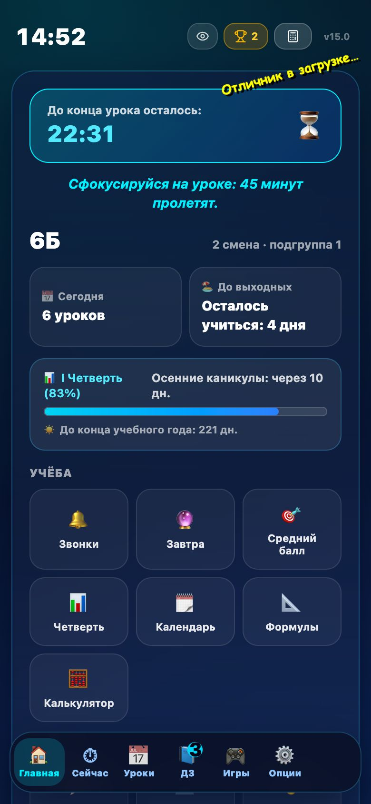
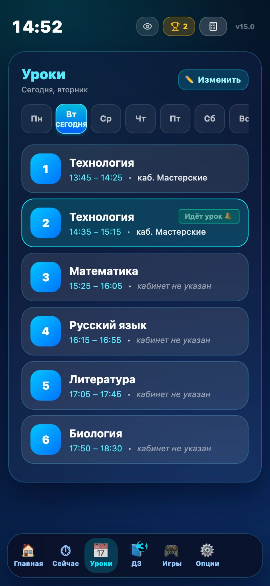
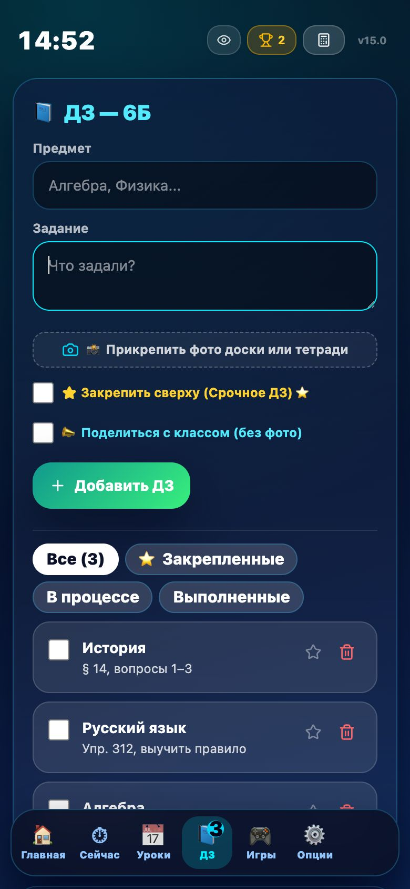
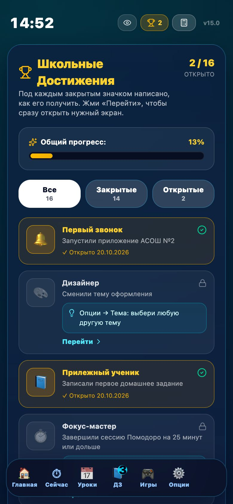
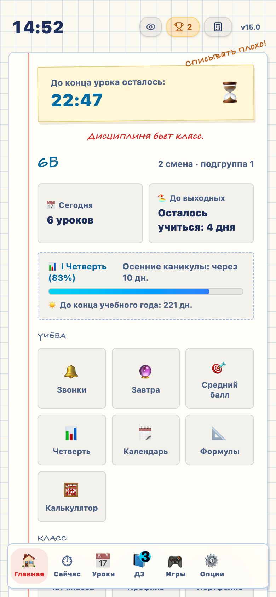

Расписание уроков
Уроки и кабинеты для всех классов с 5-го по 11-й. Режимы «Сегодня» и «Завтра» — только то, что нужно.
Для учеников АСОШ №2 · с. Аргаяш
Расписание уроков и звонков, таймер до конца урока, домашние задания и чат класса — в одном приложении. Бесплатно и без рекламы.
До звонка
--:--
Загружаю расписание…
Настоящие экраны приложения — листай вбок.





Всё, о чём обычно спрашивают в чате класса, теперь под рукой.
Уроки и кабинеты для всех классов с 5-го по 11-й. Режимы «Сегодня» и «Завтра» — только то, что нужно.
Сколько осталось до конца урока или перемены. Учитывает первую и вторую смену и сокращённые дни.
Записывай ДЗ по каждому предмету и отмечай выполненное. Можно сфотографировать доску.
Таймер помодоро и фоновые звуки, чтобы делать уроки без отвлечений.
Смотрит уроки на завтра и подсказывает, какие учебники, тетради и форму положить.
Калькулятор оценок покажет, сколько пятёрок нужно до нужной оценки в четверти.
Закрытый чат для своего класса. Вход по коду, который выдаёт классный руководитель.
Узнал о замене или отмене урока — отметь её, и она появится в расписании у всех одноклассников.
Записал домашку — поделись с классом в одно касание. Кто болел, ничего не пропустит.
Каникулы, праздники, свои контрольные и сколько дней осталось до лета.
На Android приложение напомнит об уроке за 5 минут — даже когда оно закрыто.
Большие часы и время до звонка для проектора или телевизора в классе.
Покажи QR-код со старого телефона — ДЗ, оценки и настройки переедут за секунды.
Расписание, звонки, ДЗ и игры доступны даже в режиме полёта и в подвале школы.
Тетрадь, пиксели, космос, неон и другие — или тема сама подстраивается под телефон.
Восемь мини-игр: Змейка, Флаппи, Дуэль, Память, Реакция и другие. Работают без интернета, а во время урока сами закрываются.
Всегда знаешь, какой сейчас урок и в каком кабинете, и не носишь лишние учебники.
Видно расписание ребёнка и когда заканчивается его смена.
Меньше опозданий и вопросов «а какой следующий урок?».
Приложение ставится прямо из браузера — магазин приложений не нужен. Займёт меньше минуты.
Нет, приложение полностью бесплатное и без рекламы.
У своего классного руководителя. Код нужен, чтобы в чат класса попадали только свои.
Да, нажми «Войти как гость»: доступно всё, кроме чата класса и отправки замен и ДЗ всему классу.
На Android приложение ставится файлом APK с этого сайта, на iPhone и компьютере — прямо из браузера. Оно весит меньше 4 МБ.
Да. Расписание, таймер звонков, ДЗ, календарь и игры работают без сети. Чат и замены класса показывают последнее сохранённое и обновятся, когда появится интернет.
Оценки, имя и ДЗ хранятся только на твоём телефоне. В интернет уходят лишь сообщения чата, то, чем ты делишься с классом, и анонимная статистика устройств — без имён. Рекламы и слежки нет. Подробнее — в политике конфиденциальности.
В настройках на старом телефоне нажми «Показать QR-код» и отсканируй его новым телефоном.